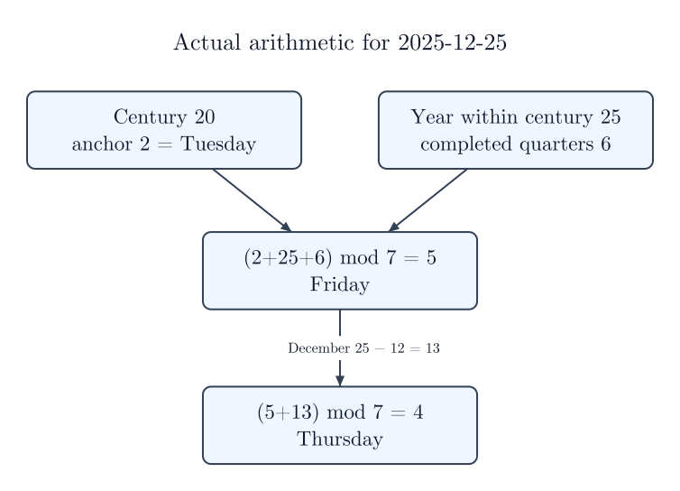
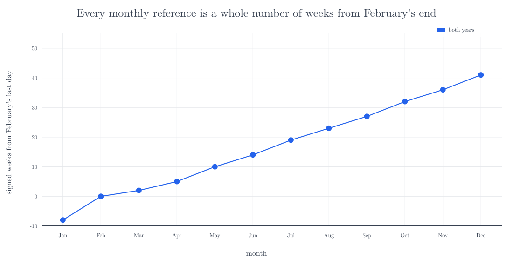
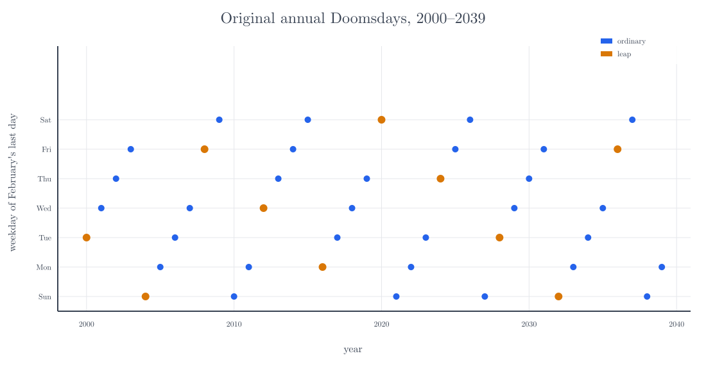
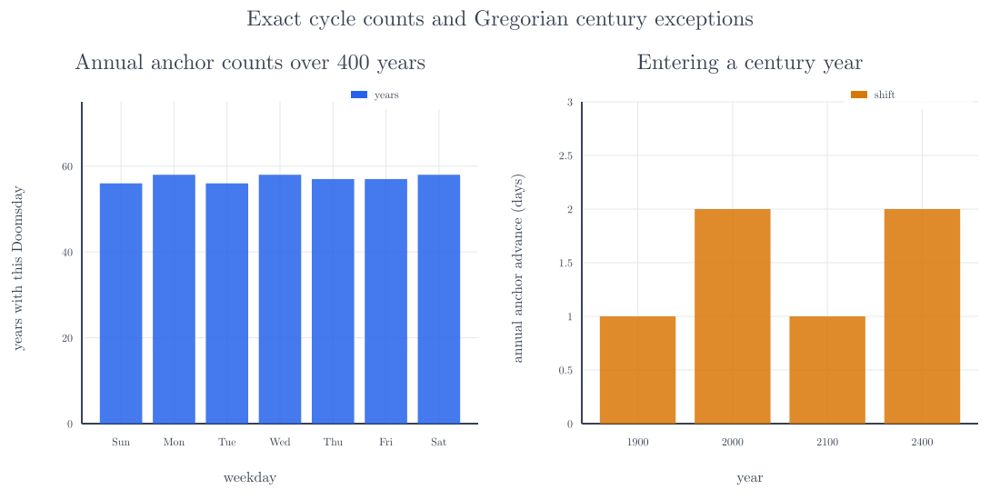
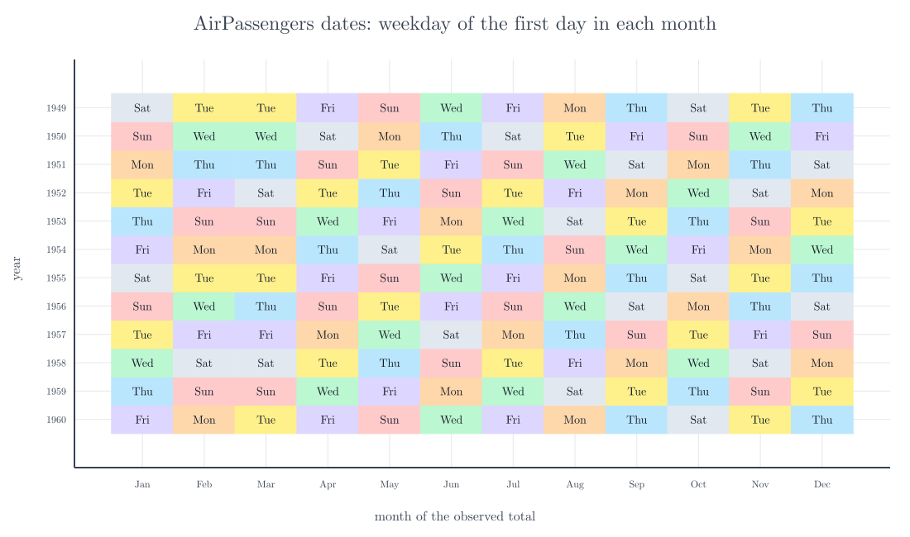
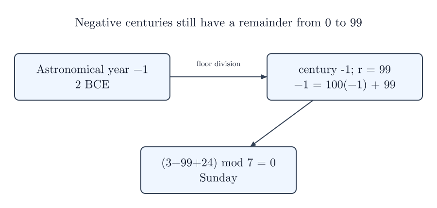

Conway's Doomsday Rule: Anchors, Leap Years and Checked Calendar Arithmetic
Abstract
Given a year, month and day, we want its weekday without counting forward through every preceding date. Leap days and century exceptions make a fixed day-per-year offset insufficient. Conway's Doomsday rule reduces the calculation to one weekday per year and a remembered reference date in each month. We work through Christmas 2025, show all twelve common/leap anchors, retain the original event dates and 2000–2039 figure, and check a complete 400-year cycle. A real monthly airline dataset demonstrates calendar annotation without inferring daily traffic from monthly totals. The canonical API exposes the actual arithmetic, validates dates and handles negative and extreme int years using explicit Gregorian conventions.
Start with Christmas 2025
Use weekday codes Sunday=0, Monday=1, …, Saturday=6. The century containing 2025 begins at 2000 and has anchor Tuesday (2). The year within the century is 25, with six completed four-year groups. Its doomsday is (2+25+6) mod 7=5, Friday. December 12 is a remembered doomsday date, so December 25 lies thirteen days later:
which names Thursday. The owned trace below comes from the same kernel used by the original weekday function; the report does not reimplement its century, year or month arithmetic.
#include <dm/dm.hpp>
int main() {
std::filesystem::create_directories("build");
const auto t=dm::algorithms::doomsday_date_trace(2025,12,25);
const auto& y=t.year;
std::print("Century {}; anchor {} ({}); within-century year {}; quarters {}.\n",y.century,y.century_anchor,dm::algorithms::doomsday_day_name(y.century_anchor),y.year_in_century,y.leap_quarters);
std::print("Doomsday {} ({}); reference December {}; signed offset {}; final {} ({}).\n",y.doomsday,dm::algorithms::doomsday_day_name(y.doomsday),t.reference_day,t.offset,t.weekday,dm::algorithms::doomsday_day_name(t.weekday));
dm::graphics::Diagram d(78,1100);
dm::graphics::DiagramNodeStyle box;
box.width=3.9; box.height=1.1; box.font_size=23;
d.node("century",{0,2},std::format("Century {}\nanchor {} = {}",y.century,y.century_anchor,dm::algorithms::doomsday_day_name(y.century_anchor)),box)
.node("year",{5,2},std::format("Year within century {}\ncompleted quarters {}",y.year_in_century,y.leap_quarters),box)
.node("doomsday",{2.5,0},std::format("({}+{}+{}) mod 7 = {}\n{}",y.century_anchor,y.year_in_century,y.leap_quarters,y.doomsday,dm::algorithms::doomsday_day_name(y.doomsday)),box)
.node("date",{2.5,-2.2},std::format("({}+{}) mod 7 = {}\n{}",y.doomsday,t.offset,t.weekday,dm::algorithms::doomsday_day_name(t.weekday)),box);
d.edge("century","doomsday").edge("year","doomsday")
.edge("doomsday","date",std::format("December {} − {} = {}",t.day,t.reference_day,t.offset))
.text({2.5,3.25},"Actual arithmetic for 2025-12-25",26)
.save_svg("build/doomsday_christmas.svg");
}Century 20; anchor 2 (Tuesday); within-century year 25; quarters 6. Doomsday 5 (Friday); reference December 12; signed offset 13; final 4 (Thursday).

Derive the rule and its mental-arithmetic shortcut
Write any astronomical integer year as y=100c+r with c=floor(y/100) and 0≤r<100. Floor division matters for negative years; C++ division alone truncates toward zero. Let mod mean a nonnegative remainder. The century and year anchors are
D(y) is the weekday of February's last day. Each ordinary year moves this anchor one weekday forward; entering a leap year moves it two. The Gregorian leap rule keeps years divisible by four, except centuries not divisible by 400. A century boundary ending in a non-leap century therefore advances the anchor by 100+24=124≡5 weekdays; the boundary ending in a century divisible by 400 advances it by 125≡6. Starting from year 2000's Tuesday, these give century anchors Tuesday, Sunday, Friday, Wednesday as c mod 4 runs through 0,1,2,3.
For the mental shortcut, write r=12q+s with 0≤s<12. Then
The trace retains q,s and floor(s/4) as well as the direct terms. These are two forms of the same arithmetic identity. Finally, choose a valid reference date a for the requested month and compute (D(y)+day−a) mod 7. A negative offset is allowed: January 1,2025 lies two days before January 3, so its weekday is 5−2=3, Wednesday. Each query uses constant work and fixed storage, independent of the number of years since an epoch.
Why all twelve anchors share one weekday
Use January 3 in common years and January 4 in leap years; February's last day; March 14; then April 4, May 9, June 6, July 11, August 8, September 5, October 10, November 7 and December 12. The original report checked eight of these; the next table checks the full twelve for both 2024 and 2025. March 14 is a week after March 7 and two weeks after the notional March 0, so these familiar conventions are congruent. Every public API here requires real valid dates rather than March 0.
Subtract February's last ordinal day from each anchor's ordinal day. All twelve differences are multiples of seven. In leap years, the January anchor and all anchors from February onwards shift together by one ordinal day, keeping the relative week offsets identical. This establishes the monthly references without assuming their weekdays.
#include <dm/dm.hpp>
int main() {
std::filesystem::create_directories("build");
const auto leap=dm::algorithms::doomsday_month_anchors(2024);
const auto common=dm::algorithms::doomsday_month_anchors(2025);
std::vector<double> month,weeks;
std::print("| month | 2024 day | 2024 ordinal | 2025 day | 2025 ordinal | weeks from February end |\n| ---: | ---: | ---: | ---: | ---: | ---: |\n");
for(std::size_t i=0;i<12;++i) {
const int a=leap[i].day_of_year-leap[1].day_of_year;
const int b=common[i].day_of_year-common[1].day_of_year;
if(a!=b || a%7 || leap[i].weekday!=4 || common[i].weekday!=5)
throw std::runtime_error("monthly anchor mismatch");
std::print("| {} | {} | {} | {} | {} | {} |\n",i+1,leap[i].day,leap[i].day_of_year,common[i].day,common[i].day_of_year,b/7);
month.push_back(i+1); weeks.push_back(b/7);
}
std::print("\nAll 24 anchors agree: 2024 Thursday; 2025 Friday.\n");
auto p=dm::graphics::RPlot::create();
p.line(month,weeks,"both years",{37,99,235}).points(month,weeks,"",{37,99,235},6)
.x_ticks(month,{"Jan","Feb","Mar","Apr","May","Jun","Jul","Aug","Sep","Oct","Nov","Dec"})
.title("Every monthly reference is a whole number of weeks from February's end")
.x_label("month").y_label("signed weeks from February's last day")
.y_limits(-10,55).size(1100,570).save_svg("build/doomsday_anchors.svg");
}| month | 2024 day | 2024 ordinal | 2025 day | 2025 ordinal | weeks from February end |
|---|---|---|---|---|---|
| 1 | 4 | 4 | 3 | 3 | -8 |
| 2 | 29 | 60 | 28 | 59 | 0 |
| 3 | 14 | 74 | 14 | 73 | 2 |
| 4 | 4 | 95 | 4 | 94 | 5 |
| 5 | 9 | 130 | 9 | 129 | 10 |
| 6 | 6 | 158 | 6 | 157 | 14 |
| 7 | 11 | 193 | 11 | 192 | 19 |
| 8 | 8 | 221 | 8 | 220 | 23 |
| 9 | 5 | 249 | 5 | 248 | 27 |
| 10 | 10 | 284 | 10 | 283 | 32 |
| 11 | 7 | 312 | 7 | 311 | 36 |
| 12 | 12 | 347 | 12 | 346 | 41 |
All 24 anchors agree: 2024 Thursday; 2025 Friday.

Retain the original event dates and forty-year view
The original events are Apollo 11's landing date, 1969-07-20; the US Declaration date, 1776-07-04; and Christmas,2025-12-25. The original Sunday/Thursday/Thursday results are retained. These are calendar calculations on supplied civil dates, without interpreting event times, locations or timezones. The same program checks every first-of-month in 2025 against Zeller's independent congruence.
Zeller uses Saturday=0, Sunday=1, …, Friday=6, so the conversion to Doomsday's Sunday-first code is (h+6) mod 7. Comparing raw codes would be a mistake. The original 2000–2039 annual-anchor scatter is retained with named weekday ticks and a separate colour for leap years. Weekday codes wrap after Saturday; an apparent downward jump is modular wrap, not a backwards-moving calendar.
#include <dm/dm.hpp>
int main() {
std::filesystem::create_directories("build");
struct Event {const char* name; int year,month,day;};
std::print("| event | date | weekday |\n| :--- | :--- | :--- |\n");
for(const auto e:std::vector<Event>{{"Apollo 11 Moon landing",1969,7,20},{"US Declaration of Independence",1776,7,4},{"Christmas Day 2025",2025,12,25}})
std::print("| {} | {}-{:02}-{:02} | {} |\n",e.name,e.year,e.month,e.day,dm::algorithms::doomsday_day_name(dm::algorithms::doomsday_weekday(e.year,e.month,e.day)));
std::print("\n| month of 2025 | Doomsday code on day 1 | converted Zeller code | weekday |\n| ---: | ---: | ---: | :--- |\n");
int agree=0;
for(int m=1;m<=12;++m) {
const int a=dm::algorithms::doomsday_weekday(2025,m,1);
const int b=(dm::algorithms::zeller_gregorian(2025,m,1)+6)%7;
agree+=a==b;
std::print("| {} | {} | {} | {} |\n",m,a,b,dm::algorithms::doomsday_day_name(a));
}
std::print("\nDoomsday == converted Zeller on 2025 month starts: {}/12.\n",agree);
std::vector<double> ordinary_year,ordinary_day,leap_year,leap_day;
for(int y=2000;y<=2039;++y) {
const auto t=dm::algorithms::doomsday_year_trace(y);
(t.leap?leap_year:ordinary_year).push_back(y);
(t.leap?leap_day:ordinary_day).push_back(t.doomsday);
}
auto p=dm::graphics::RPlot::create();
p.points(ordinary_year,ordinary_day,"ordinary",{37,99,235},5)
.points(leap_year,leap_day,"leap",{217,119,6},6)
.y_ticks({0,1,2,3,4,5,6},{"Sun","Mon","Tue","Wed","Thu","Fri","Sat"})
.title("Original annual Doomsdays, 2000–2039").x_label("year")
.y_label("weekday of February's last day").y_limits(-.5,8.5)
.size(1100,570).save_svg("build/doomsday_original.svg");
}| event | date | weekday |
|---|---|---|
| Apollo 11 Moon landing | 1969-07-20 | Sunday |
| US Declaration of Independence | 1776-07-04 | Thursday |
| Christmas Day 2025 | 2025-12-25 | Thursday |
| month of 2025 | Doomsday code on day 1 | converted Zeller code | weekday |
|---|---|---|---|
| 1 | 3 | 3 | Wednesday |
| 2 | 6 | 6 | Saturday |
| 3 | 6 | 6 | Saturday |
| 4 | 2 | 2 | Tuesday |
| 5 | 4 | 4 | Thursday |
| 6 | 0 | 0 | Sunday |
| 7 | 2 | 2 | Tuesday |
| 8 | 5 | 5 | Friday |
| 9 | 1 | 1 | Monday |
| 10 | 3 | 3 | Wednesday |
| 11 | 6 | 6 | Saturday |
| 12 | 1 | 1 | Monday |
Doomsday == converted Zeller on 2025 month starts: 12/12.

Check the complete 400-year cycle and century exceptions
Among 400 consecutive Gregorian years, 100 are divisible by four, four are centuries, and one is divisible by 400. Hence there are 100−4+1=97 leap years, giving
days. The leap pattern and weekdays therefore repeat every 400 years. This is an exact combinatorial period, not a claim that annual Doomsdays are uniformly distributed across the seven weekdays.
The next executed scan checks all 146,097 dates in 2000–2399 against a sequential weekday counter anchored at Saturday,2000-01-01. It also checks Zeller with the explicit code conversion and compares each date to the date 2,400 years earlier. Native tests independently supply month lengths and repeat the daily oracle over five complete cycles, including negative years. The century controls below show why a simple “every fourth year” rule fails at 1900 and 2100 but succeeds at 2000 and 2400.
#include <dm/dm.hpp>
int main() {
std::filesystem::create_directories("build");
std::array<int,7> counts{};
int expected=6,days=0,mismatches=0,leaps=0;
for(int y=2000;y<2400;++y) {
++counts[dm::algorithms::doomsday_of_year(y)];
leaps+=dm::algorithms::doomsday_is_leap(y);
for(int m=1;m<=12;++m) for(int day=1;day<=dm::algorithms::gregorian_month_days(y,m);++day) {
const int d=dm::algorithms::doomsday_weekday(y,m,day);
mismatches+=(d!=expected || d!=(dm::algorithms::zeller_gregorian(y,m,day)+6)%7 || d!=dm::algorithms::doomsday_weekday(y-2400,m,day));
expected=(expected+1)%7; ++days;
}
}
std::print("Complete cycle: {} years; {} leap years; {} days; {} whole weeks; {} mismatches.\n\n",400,leaps,days,days/7,mismatches);
if(days!=146097 || leaps!=97 || mismatches || expected!=6) throw std::runtime_error("cycle check failed");
std::vector<double> count;
std::vector<std::string> names;
std::print("| Doomsday | annual count / 400 |\n| :--- | ---: |\n");
for(int w=0;w<7;++w) {
names.push_back(dm::algorithms::doomsday_day_name(w).substr(0,3));
count.push_back(counts[w]);
std::print("| {} | {} |\n",dm::algorithms::doomsday_day_name(w),counts[w]);
}
std::vector<double> advance;
std::vector<std::string> centuries;
std::print("\n| entering year | leap | February days | anchor advance modulo 7 |\n| ---: | :--- | ---: | ---: |\n");
for(int y:{1900,2000,2100,2400}) {
const int shift=(dm::algorithms::doomsday_of_year(y)-dm::algorithms::doomsday_of_year(y-1)+7)%7;
advance.push_back(shift); centuries.push_back(std::to_string(y));
std::print("| {} | {} | {} | {} |\n",y,dm::algorithms::doomsday_is_leap(y),dm::algorithms::gregorian_month_days(y,2),shift);
}
auto a=dm::graphics::RPlot::barplot(count,names,"years",{37,99,235});
a.title("Annual anchor counts over 400 years").x_label("weekday").y_label("years with this Doomsday").y_limits(0,75);
auto b=dm::graphics::RPlot::barplot(advance,centuries,"shift",{217,119,6});
b.title("Entering a century year").x_label("year").y_label("annual anchor advance (days)").y_limits(0,3);
dm::graphics::RLayout::create(1,2).add(a).add(b).size(1100,550)
.title("Exact cycle counts and Gregorian century exceptions").fit_panels()
.save_svg("build/doomsday_cycle.svg");
}Complete cycle: 400 years; 97 leap years; 146097 days; 20871 whole weeks; 0 mismatches.
| Doomsday | annual count / 400 |
|---|---|
| Sunday | 56 |
| Monday | 58 |
| Tuesday | 56 |
| Wednesday | 58 |
| Thursday | 57 |
| Friday | 57 |
| Saturday | 58 |
| entering year | leap | February days | anchor advance modulo 7 |
|---|---|---|---|
| 1900 | false | 28 | 1 |
| 2000 | true | 29 | 2 |
| 2100 | false | 28 | 1 |
| 2400 | true | 29 | 2 |

Annotate a real monthly dataset without inventing daily observations
The built-in AirPassengers dataset holds 144 monthly international airline totals from 1949 through 1960, in thousands of passengers. Calendar month lengths and starting weekdays are useful annotations for these dated rows. They do not reveal which weekdays passengers actually flew, or establish a causal weekday effect from monthly totals.
Reuse the existing Gregorian monthly-feature API for validated month lengths and Zeller weekday codes. Add the Doomsday name computed from each row's actual year/month, and check agreement for all 144 records. The first twelve rows below retain the original passenger totals; the calendar matrix names every month-start weekday for all twelve years.
#include <dm/dm.hpp>
int main() {
std::filesystem::create_directories("build");
auto calendar=dm::algorithms::gregorian_month_features(dm::datasets::air_passengers());
std::vector<std::string> starts;
std::vector<std::vector<double>> z(12,std::vector<double>(12));
int agree=0;
for(std::size_t i=0;i<calendar.nrows();++i) {
const int y=static_cast<int>(calendar.double_at("year",i));
const int m=static_cast<int>(calendar.double_at("month",i));
const int w=dm::algorithms::doomsday_weekday(y,m,1);
agree+=w==(static_cast<int>(calendar.double_at("start_weekday_code",i))+6)%7;
starts.push_back(dm::algorithms::doomsday_day_name(w));
z[m-1][1960-y]=w;
}
calendar.add_column("doomsday_start",starts);
std::print("AirPassengers: {} monthly records; Doomsday/Zeller agreement {}/{}.\n\n",calendar.nrows(),agree,calendar.nrows());
if(agree!=144) throw std::runtime_error("dataset calendar mismatch");
std::print("{}\n",calendar.select({"year","month","passengers","calendar_days","doomsday_start"}).head(12).to_md());
const std::vector<dm::graphics::RGBA> colors{{254,202,202},{254,215,170},{254,240,138},{187,247,208},{186,230,253},{221,214,254},{226,232,240}};
std::vector<double> months,years;
std::vector<std::string> year_names;
for(int m=1;m<=12;++m) months.push_back(m);
for(int y=1960;y>=1949;--y) {years.push_back(-y);year_names.push_back(std::to_string(y));}
auto p=dm::graphics::RPlot::create();
p.image(months,years,z,colors,0,6);
for(int m=1;m<=12;++m) for(int y=1949;y<=1960;++y)
p.text(m,-y,dm::algorithms::doomsday_day_name(static_cast<int>(z[m-1][1960-y])).substr(0,3),{17,24,39},14);
p.x_ticks(months,{"Jan","Feb","Mar","Apr","May","Jun","Jul","Aug","Sep","Oct","Nov","Dec"})
.y_ticks(years,year_names).title("AirPassengers dates: weekday of the first day in each month")
.x_label("month of the observed total").y_label("year").size(1100,650)
.save_svg("build/doomsday_airline.svg");
}AirPassengers: 144 monthly records; Doomsday/Zeller agreement 144/144.
| year | month | passengers | calendar_days | doomsday_start |
|---|---|---|---|---|
| 1949 | 1 | 112 | 31 | Saturday |
| 1949 | 2 | 118 | 28 | Tuesday |
| 1949 | 3 | 132 | 31 | Tuesday |
| 1949 | 4 | 129 | 30 | Friday |
| 1949 | 5 | 121 | 31 | Sunday |
| 1949 | 6 | 135 | 30 | Wednesday |
| 1949 | 7 | 148 | 31 | Friday |
| 1949 | 8 | 148 | 31 | Monday |
| 1949 | 9 | 136 | 30 | Thursday |
| 1949 | 10 | 119 | 31 | Saturday |
| 1949 | 11 | 104 | 30 | Tuesday |
| 1949 | 12 | 118 | 31 | Thursday |

Negative years, extreme inputs and explicit rejection
All years use astronomical numbering: year zero is 1 BCE, year −1 is 2 BCE. Gregorian rules apply proleptically, without a Julian/Gregorian adoption switch. Thus these functions do not reconstruct every historically used local civil calendar. No timezone or time-of-day input is inferred. The supported year domain is the full int range.
For year −1, floor division gives century −1 and within-century year
- Its anchor is Wednesday (3), and (3+99+24) mod 7=0, Sunday.
Truncation toward zero would instead give century zero and remainder −1, which breaks the rule. Year −100 exposes the old implementation clearly: its old doomsday result is −3, outside the weekday range. The corrected floor-based result is three, Wednesday.
The old unchecked month array can index past its end, and an arbitrary day can produce invalid arithmetic before reduction. The canonical date API now validates month lengths, leap days and the day range before reference lookup or subtraction. It rejects January 0, April 31 and February 29 in 1900 rather than silently normalizing them. The name helper separately preserves its useful modulo-seven normalization for arbitrary signed weekday codes. Fixed-size traces and anchor arrays need no optional history budget and retain no references into caller storage.
#include <dm/dm.hpp>
int main() {
std::filesystem::create_directories("build");
std::print("| astronomical year | century | year within century | January 1 | year Doomsday |\n| ---: | ---: | ---: | :--- | :--- |\n");
for(int y:{std::numeric_limits<int>::min(),-400,-100,-1,0,1,std::numeric_limits<int>::max()}) {
const auto t=dm::algorithms::doomsday_year_trace(y);
std::print("| {} | {} | {} | {} | {} |\n",y,t.century,t.year_in_century,dm::algorithms::doomsday_day_name(dm::algorithms::doomsday_weekday(y,1,1)),dm::algorithms::doomsday_day_name(t.doomsday));
}
int rejected=0;
for(const auto date:std::vector<std::array<int,3>>{{2025,13,1},{2025,1,0},{2025,4,31},{1900,2,29},{2025,1,std::numeric_limits<int>::min()}}) {
try {(void)dm::algorithms::doomsday_weekday(date[0],date[1],date[2]);}
catch(const std::invalid_argument&) {++rejected;}
}
const auto t=dm::algorithms::doomsday_year_trace(-1);
std::print("\nExpected invalid-date rejections {}/5; name(-1)={}; corrected Doomsday(-100)={}.\n",rejected,dm::algorithms::doomsday_day_name(-1),dm::algorithms::doomsday_of_year(-100));
dm::graphics::Diagram d(80,1100);
dm::graphics::DiagramNodeStyle box;box.width=4;box.height=1.2;box.font_size=24;
d.node("year",{0,1},"Astronomical year −1\n2 BCE",box)
.node("split",{6.5,1},std::format("century {}; r = {}\n−1 = 100(−1) + 99",t.century,t.year_in_century),box)
.node("weekday",{3.25,-1.4},std::format("({}+{}+{}) mod 7 = {}\n{}",t.century_anchor,t.year_in_century,t.leap_quarters,t.doomsday,dm::algorithms::doomsday_day_name(t.doomsday)),box)
.edge("year","split","floor division")
.edge("split","weekday")
.text({3.25,2.4},"Negative centuries still have a remainder from 0 to 99",25)
.save_svg("build/doomsday_signed.svg");
}| astronomical year | century | year within century | January 1 | year Doomsday |
|---|---|---|---|---|
| -2147483648 | -21474837 | 52 | Tuesday | Friday |
| -400 | -4 | 0 | Saturday | Tuesday |
| -100 | -1 | 0 | Monday | Wednesday |
| -1 | -1 | 99 | Friday | Sunday |
| 0 | 0 | 0 | Saturday | Tuesday |
| 1 | 0 | 1 | Monday | Wednesday |
| 2147483647 | 21474836 | 47 | Tuesday | Thursday |
Expected invalid-date rejections 5/5; name(-1)=Saturday; corrected Doomsday(-100)=3.

Verification and scope
Native tests check 730,485 dates against an independent sequential-day oracle across five complete 400-year cycles. Additional std::chrono comparisons cover representative negative, zero and positive years; 10,000 full-range int-year samples use equivalent dates reduced modulo 400 within chrono's supported year range. Monthly anchors, century/leap boundaries, direct/dozen arithmetic identities, signed offsets, arbitrary name codes, complete invalid-date rejection and owned copies are checked. All original event answers, eight anchor dates, twelve month-start comparisons and forty annual-anchor points are retained.
The method computes a weekday in a specified calendar. It does not infer local historical adoption, timestamps, holiday calendars or daily observations from a monthly dataset. With those conventions explicit, one annual anchor and one monthly difference provide a constant-work, hand-checkable weekday calculation.
References
S. W. Graham's [The Doomsday Rule (1995 lecture notes)](https://people.se.cmich.edu/graha1sw/pub/doomsday/Doomsday.pdf) explains Conway's century/year/reference decomposition and the dozen shortcut. This implementation uses valid January 3/4 and March 14 references, congruent to the notes' alternate January/March conventions, and extends the arithmetic with floor-based astronomical years and complete validation. The [US Naval Observatory's Gregorian leap-year rule](https://aa.usno.navy.mil/faq/leap_years) specifies the century exceptions. The 400-year period, ordinal checks and reported frequencies are derived and measured in the executed programs here.